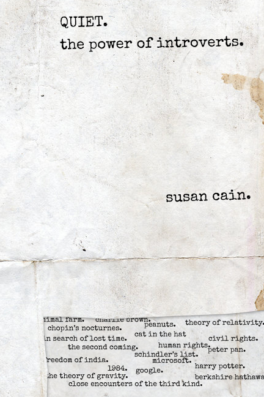
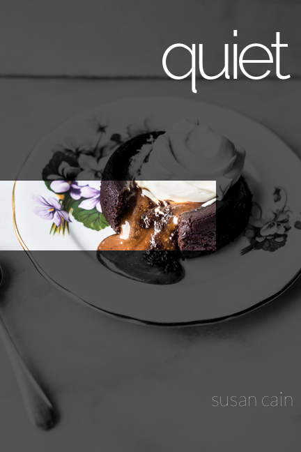
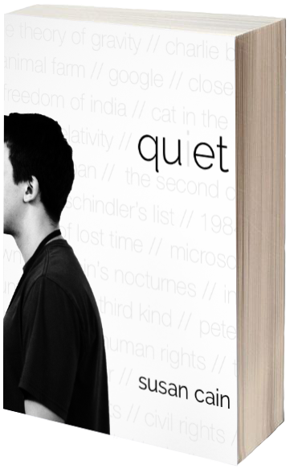

After reading the book, I started exploring many different ideas. These ideas ranged from showing an object that would represent an introvert to showing quiet introspective people or places. The process was simple. I would make concepts using an idea and after critique and comparision I moved forward with the ones that made sense or started on new ideas.
These are the concepts below. The images include first drafts and developments of ideas.
- 
- 

-
'Pin-drop' Silence: This idea shows a still image of pins while falling. The blue pins represent introverts as unnoticeable yet sharp and powerful objects in a world of red (extroverts). -
The Achievements of Introverts: This design is made to look like an old piece of paper with typewriter like text. The words, apart from the title and the authors name, consist of the well-known achievements of introverts. -
The Introverted Person: This idea explores a person, a faceless person whose image suggests the appearence is not imporant. It also includes well-known achievements of introverts in the backgorund.